05-Crystals & X-Ray Diffraction
![]()
Summary
To determine crystal structure, we need light of wavelength comparable to the size of the unit cells. These are X-rays. We’ll discuss how these are produced. Then we’ll see how we use them to determine the size and symmetries of the unit cell. Along with NMR, X-ray diffraction (XRD) is one of the main techniques of molecular structure determination.
Contents
- Sources of X-rays
- X-ray spectra
- Bragg reflection
- Separation of planes (hkl)
- Single crystal versus powder diffraction
- Extinctions
- Scattering factors
X-Ray Diffraction
- This technique is for characterising crystalline materials
- in a simple exercise it can distinguish a crystalline from an amorphous specimen
- It primarily provides information on crystal structure
- Lattice type
- Crystal type
- compliments NMR for molecular characterisation
Requirements for XRD
- Source of X-Rays;
- X-rays are collimated (into parallel beam) and directed onto the sample
- Crystal or powder sample
- X-ray detector
- The detector records and processes the X-ray signal diffracted from the sample and converts the signal to a count rate or intensity.
- The detector can sometimes be a photographic plate which will have a pattern (of dots or circles); In this case a CCD (charge-coupled device) converts the intensity of the pattern into an electrical signal which are then sent to a computer for processing.
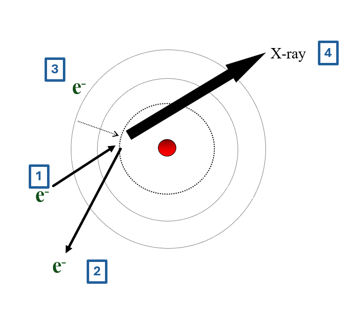
- high energy incident electron
- ejects core electron from atom
- core filled from outer shell electron
- difference in energy emitted as X-ray
- X-ray wavelength depends on atomic energy levels
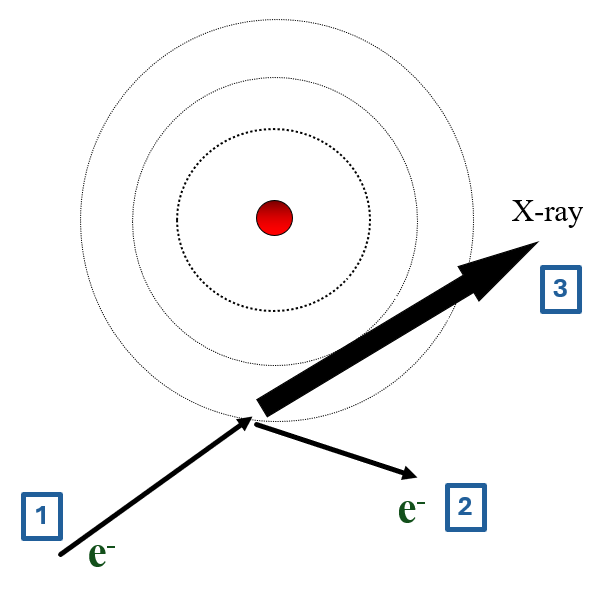
- high energy incident electron
- this electron bounces off atom
- change in energy emitted as X-ray
- X-ray wavelength depends on collision, not atom
X-Ray Spectrum
total spectrum consists of
- bremsstrahlung
- characteristic lines
use filters to get monochromatic beam
common line for XRD is 0.154051nm of \(Cu^{K\alpha}\)
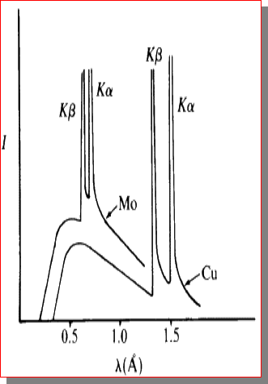
Principle: (of Bragg-Bretano XRD)
- Interference between X-ray beams reflected from the crystal planes
- Monochromatic x-ray beam directed at crystal;
- Beams are scattered from each set of crystal planes at specific angles.
- X-ray diffraction peaks are produced by constructive interference of these reflected (scattered) beams.
- We need x-rays (rather than any other EM radiation) for this because we need the wavelength of the radiation to be approximately the same as the spacing of the crystal planes.
Treat the crystal as stacks of reflecting planes;
There are planes in many different orientations and many different separations; depending on the crystal type.
For any one set of planes, separated by distance “d”, the incoming x-ray beam must make a particular angle, θ, called the Bragg angle, in order for constructive interference to occur between the beams reflected from successive planes
Bragg Reflection
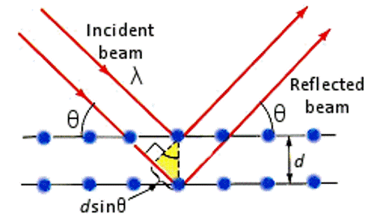$ n = 2 d sin $$
\(d_{(111)} = \frac{a}{\sqrt 3}\)
\(sin \theta = \frac{\lambda}{2d_{(111)}}\)
\(d_{(100)} = \frac{a}{\sqrt 1}\)
\(sin \theta = \frac{\lambda}{2d_{(100)}}\)
Relationship between d and a
- The separation of a given set of planes in a crystal \(d_{hkl}\) can be determined by measuring the angle at which x-rays of known wavelength are strongly reflected. The relation between d and the lattice parameter of the plane (for the cubic structure) is given by:
\(d \; = \;\frac{a}{\sqrt {h^2 + k^2 + l^2}}\)
- This formula holds for the cubic structure only
- equivalent relationships hold for other structures
- For orthorhombic structures, get
\(\frac{1}{d^2} \; = \;\frac{h^2}{a^2} + \frac{k^2}{b^2} + \frac{l^2}{c^2}\)
Samples and Methods
- Two methods:
- Single-crystal diffraction
- Powder (polycrystalline) diffraction
- Single Crystal:
- Get full information on crystal structure
- Crystal type, lattice parameters, density of atoms on planes etc.
- Powder:
- Get finger-print (ID)
Pros and Cons
- Advantages of Single Crystal XRD :
- Detailed crystal structure;
- Unambiguous (no confusion about results)
- Disadvantages:
- Must have a single, robust (stable) sample, generally between 50—250 microns in size
- Must be an optically clear sample
- Data collection generally requires between 24 and 72 hours
- Advantages of Powder XRD
- Easy to prepare sample:
- Grind down to particle size of 0.002 mm and press into a sample holder.
Single Crystal Diffraction
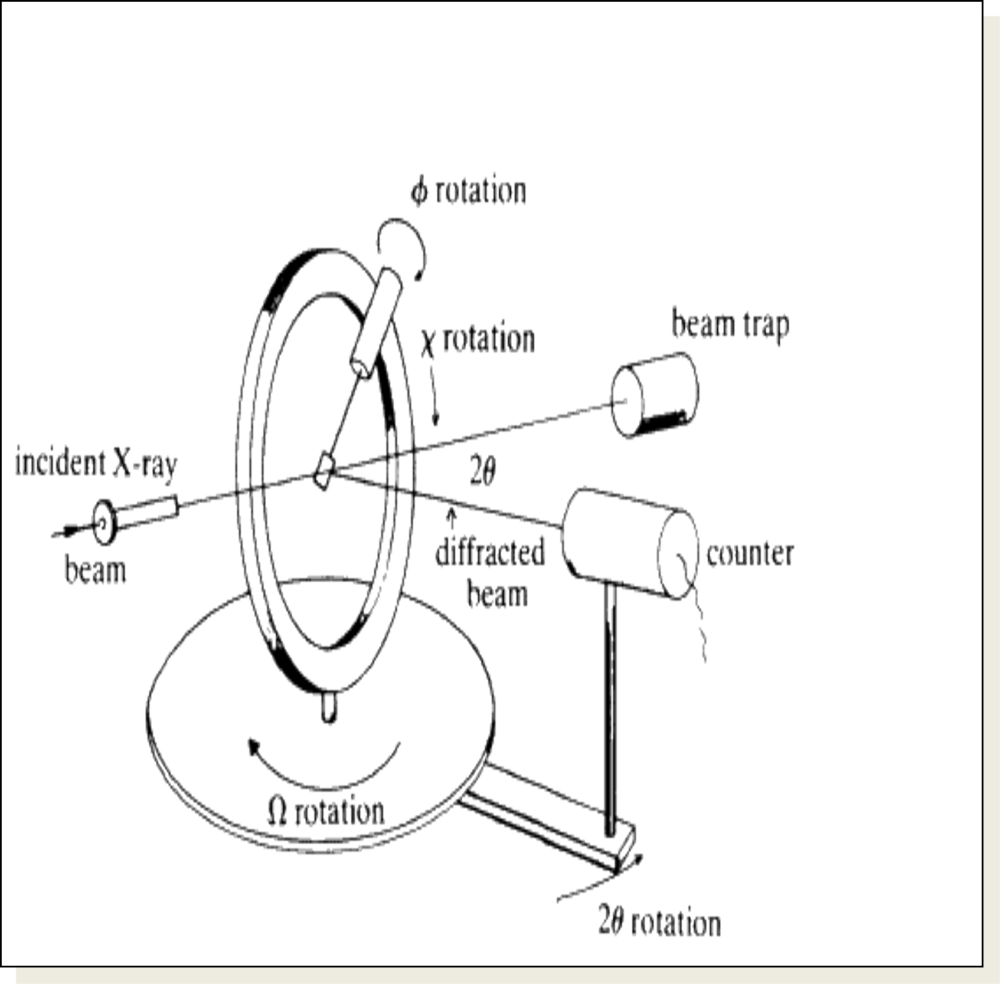
- Crystal is mounted on a goniometer in centre;
- This allows for orientation;
- Crystal is slowly rotated (so that θ for differently oriented planes can be made to satisfy Bragg Law.
- The scan is called a “locked coupled scan” because as the crystal is moved through angle Δθ , detector is moved through angle 2 Δθ (so it will pick up reflections if they exist).
- Detector records angle and intensity.
Interior of X-Ray Machine
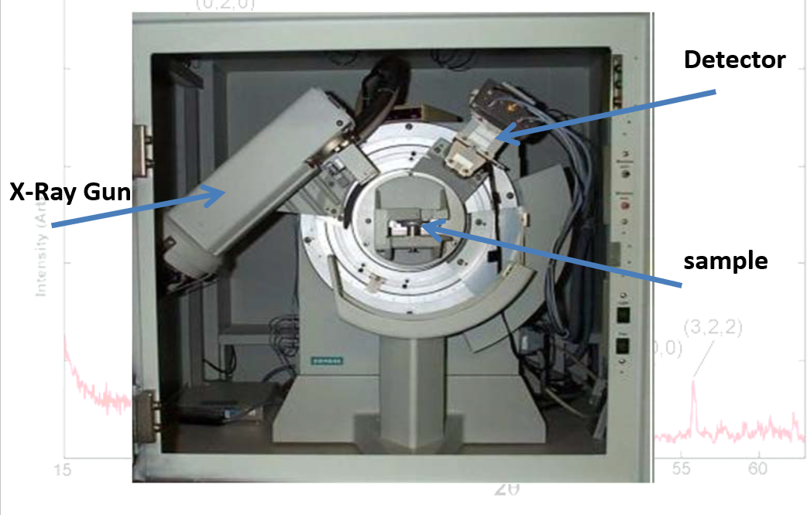Powder Patterns
- In every crystal type there are many planes at different orientations.
- If a single crystal is being used, the Bragg’s law might be fulfilled for one set of planes while another set of planes could cause destructive interference
- Planes will not be oriented to satisfy Braggs Law
- Hence crystal has to be rotated.
- When a sample is in powder form however
- at least some of the crystallites will always be orientated so as to satisfy the Bragg condition for each set of crystal planes that exist;
- So the full quota of crystal planes will show up.
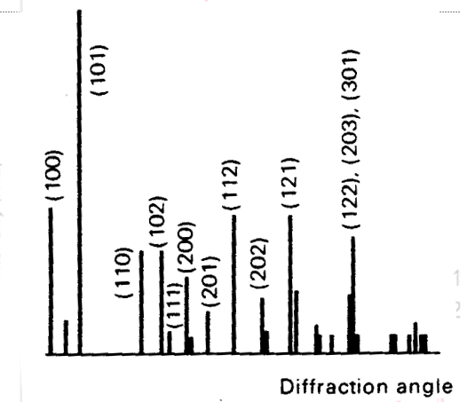
- The sample is spread on a flat plate;
- Diffraction intensities are detected electronically.
- Spectrum produced of intensity versus diffraction angle (either \(\theta\) or \(2\theta\))
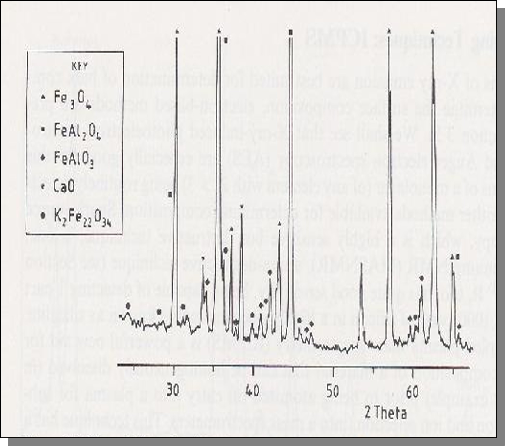
- Qualitative analysis:
- determine the ten most intense
- diffraction lines and match
- with available diffraction pattern library
- ICCD – International Centre for Diffraction Data
Spectrum Dependence on State of Substance
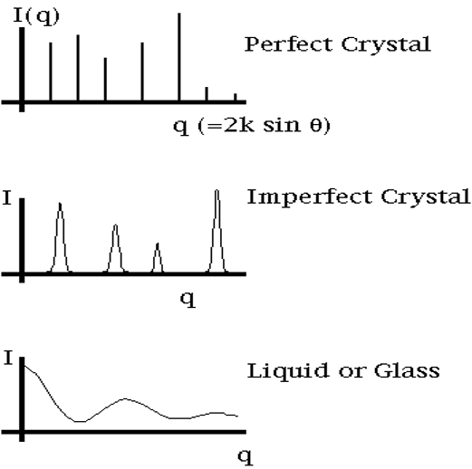Problems
- A first order reflection from the (111) planes of a cubic crystal was observed at a glancing angle of \(\theta_{111}\) = 11.2\(^{\circ}\) when Cu Kα X-rays of wavelength 0.154051 nm were used.
- Calculate \(d_{111}\)
- What is the length of the side of the unit cell?
- Calculate \(d_{123}\)
- Calculate the angle, from which the same lattice will give a reflection from the (123) plane.
[0.397nm, 0.687nm, 0.191nm, \(\theta_{123}\) = 23.85\(^{\circ}\)]
- The (111) planes in potassium iodide correspond to the first reflection in the X-ray spectrum. Calculate the minimum value of \(\theta\) for KI using \(\lambda _{CuK\alpha}\) = 0.154051 nm and a = 0.70655 nm for the cubic unit cell.
[\(9.25^{\circ}\)]
Extinctions
- This means that reflections from some sets planes are cancelled out.
- Knowing which planes are NOT giving reflections lets us determine what type of cubic structure is diffracting the x-rays.
- BCC structures h + k + l must be even
- FCC h, k and l themselves must be either all odd or all even
Problems
- YN - \(\lambda\;=\;Cu_{K\alpha} = 0.154051nm\)
- Find the 2θ position of all the peaks
- Find the interplanar spacing for all the peaks
- Find lattice constant
- Is it primitive, BCC, or FCC?
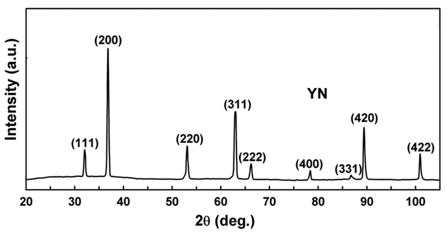
- NaCl
- \(\lambda\;=\;Cu_{K\alpha} = 0.154051nm\)
- face centred cubic
- Find the 2θ position of all the peaks
- Find the interplanar spacing for all the peaks
- index the peaks
- Find lattice constant
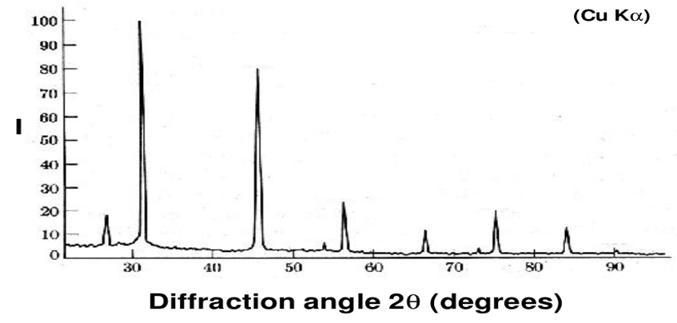
Scattering Factor
- The argument about extinction can only apply if the atoms/ions in the different planes have the same scattering strenghts.
- The scattering strength (factor) of an atom/ion is related to its electron density distribution.
- This difference in scattering strength can even affect the pattern we get from similar type cells.
- For example, the x-ray powder patterns for NaCl and KCl are different despite both crystals being FFC.
- This is due the different scattering strengths of the ions:
- Scattering factor for Na+, K+ and Cl- are 10, 18 and 18 respectively.
- When waves from the + ion and the –ion should be cancelling out (destructive interference)
- this will not happen completely for Na+ and Cl-, but will be complete for K+ and Cl-
- So there are lines missing in KCl that are weakly present in NaCl
Equations
\(n\;\lambda = 2\;d\;sin\theta\)
\(d \; = \;\frac{a}{\sqrt {h^2 + k^2 + l^2}}\)
\(\frac{1}{d^2} \; = \;\frac{h^2}{a^2} + \frac{k^2}{b^2} + \frac{l^2}{c^2}\)
Body centred: \(h\;+\;k\;+\;l\;=\;even\)
Face centred: h, k, l all even or all odd
References

Physics - Quantum